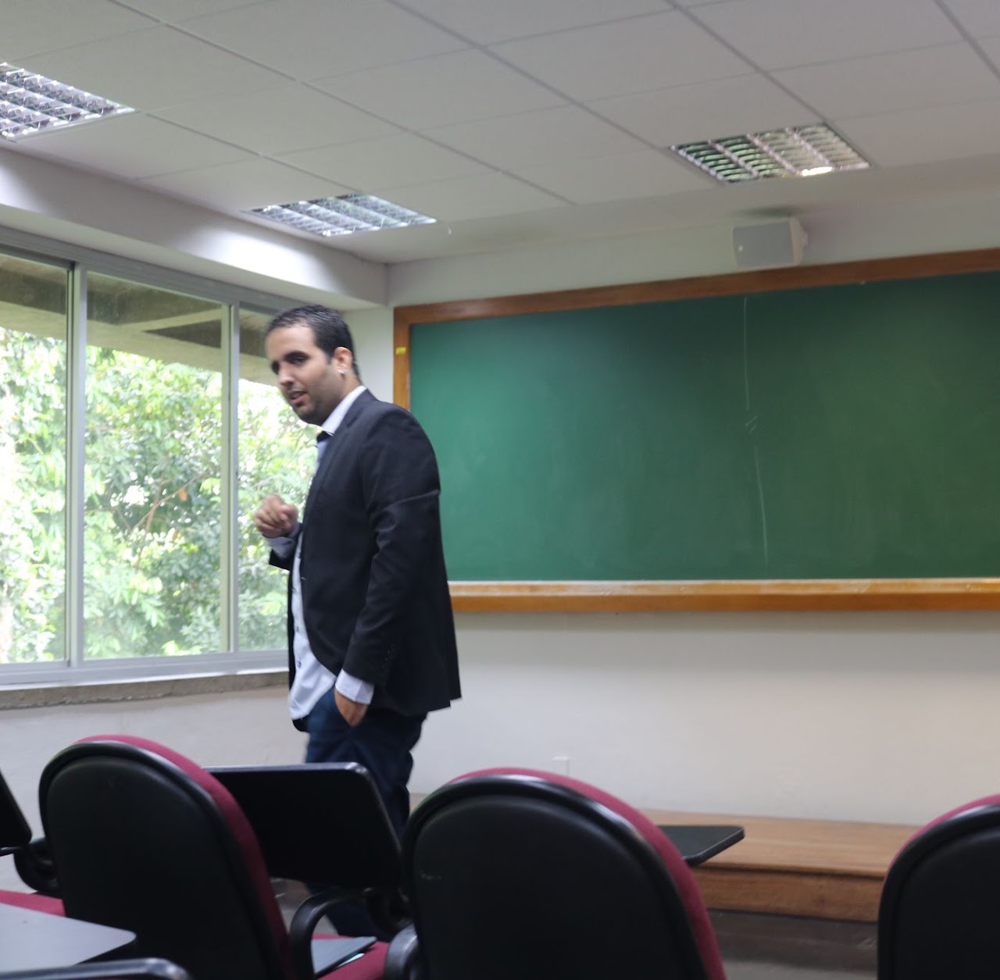

Departamento de Matemática · UFPE
Alcides de
Carvalho Júnior
Geometria Diferencial
& Análise Geométrica
Professor permanente · PPGDMat

Pesquisa
Geometria, curvatura
e rigidez.
Pesquiso Geometria Diferencial, com ênfase em teoria de subvariedades e Análise Geométrica. Meu interesse principal está nos problemas de rigidez de subvariedades em formas espaciais — quando a imersão isométrica é única a menos de movimentos rígidos — e no estudo de variedades (m)-quasi-Einstein e hipersuperfícies estáveis. Busco conexões com equações diferenciais parciais geométricas e curvatura prescrita.
Percurso acadêmico
Formação
2011–2013
Graduação
UFAL · Maceió
2014–2016
Mestrado
UNICAMP · Campinas
2016–2020
Doutorado
IMPA · Rio de Janeiro
Trajetória
2020–2022
Pós-doutorado
USP · São Carlos
2022–2024
Pós-doutorado
UFAL · Maceió
Desde 2024
Professor permanente
UFPE · Recife